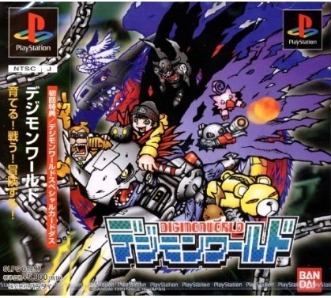
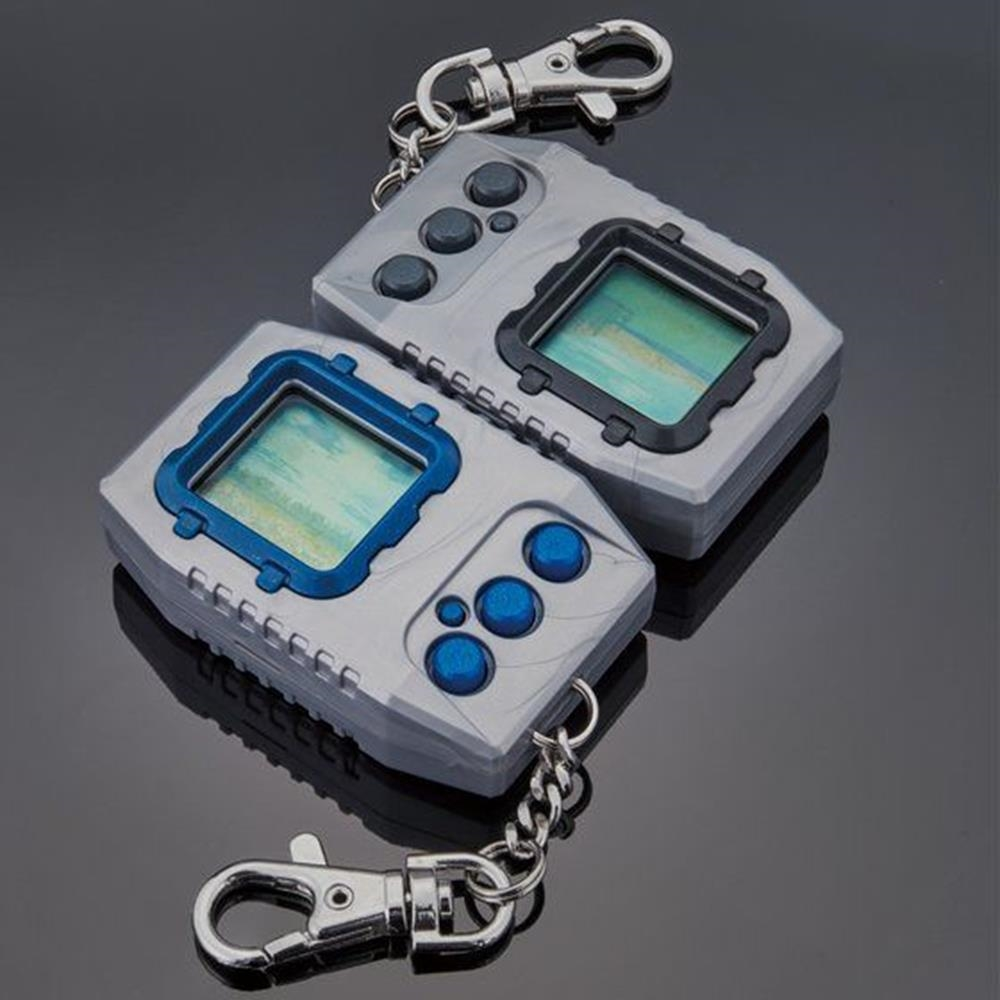
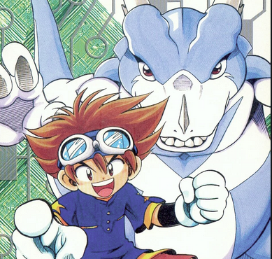

Seguido del estreno de la primera película de Digimon a comienzos de 1999, en marzo Fuji TV comenzó a emitir la primera temporada de anime de esta saga, conocida como Digimon Adventure, a la cual sucedieron varias otras temporadas. La primera y segunda temporada se basan en una misma continuidad, mientras el resto de temporadas de televisión desarrollan una historia diferente cada vez, siempre basadas en el concepto «Digimon».

Juegos
Los videojuegos de Digimon fueron lanzados para la consola PlayStation con 14 versiones diferentes, y para consolas portátiles como la Game Boy Advance (3 juegos) y la WonderSwan (15 juegos), muchos de los cuales solo están disponibles para Japón. También ha habido único juego para la Sega Saturn y 3 juegos para jugar en PC todos del tipo MMORPG. Para las consolas de sexta generación (PS2, GameCube, Xbox y PSP), salieron sólo 4 juegos (el último de los cuales es un RPG para PSP basado en la primera temporada de la serie), uno para cada plataforma, Mientras que la Nintendo DS cuenta con 9 juegos.

Digimon Pendulum
デジモンペンデュラム
Is the second in the series of the Digimon Virtual Pet line. Each version has a roster of 20 Digimon and additional functions such as the Pendulum training and Jogressing. It evolves through 6 stages after hatching from the egg, beginning with the Baby I Stage and ending in the Ultimate Stage.

Manga
Los videojuegos de Digimon fueron lanzados para la consola PlayStation con 14 versiones diferentes, y para consolas portátiles como la Game Boy Advance (3 juegos) y la WonderSwan (15 juegos), muchos de los cuales solo están disponibles para Japón. También ha habido único juego para la Sega Saturn y 3 juegos para jugar en PC todos del tipo MMORPG. Para las consolas de sexta generación (PS2, GameCube, Xbox y PSP), salieron sólo 4 juegos (el último de los cuales es un RPG para PSP basado en la primera temporada de la serie), uno para cada plataforma, Mientras que la Nintendo DS cuenta con 9 juegos.